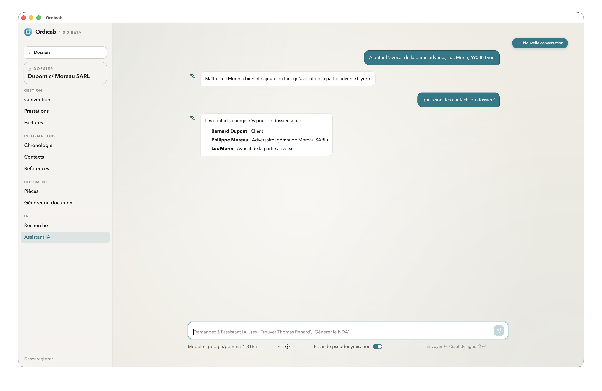

Assistant intégré
L'assistant intégré est un chat IA directement dans le dossier. Il connaît le contexte de l'affaire — contacts, documents, notes, chronologie — et peut intervenir sur des tâches concrètes sans jamais quitter l'application.

L'assistant IA dans un dossier — chat contextuel avec accès aux données
Deux modes de fonctionnement
Via API distante
L'assistant se connecte au fournisseur IA de votre choix via une clé API. Les données du dossier (ou leur version pseudonymisée) sont transmises au modèle pour chaque échange.
Fournisseurs supportés :
- Anthropic (Claude) — modèles Claude Haiku, Sonnet, Opus
- OpenAI — GPT-4o, GPT-4 Turbo
- Mistral AI — modèles Mistral et Mixtral
- Infomaniak (kAI) — IA souveraine hébergée en Suisse, recommandée pour les cabinets soucieux de la localisation des données
- Tout fournisseur compatible avec l'API OpenAI (base URL personnalisable)
Via Ollama (modèle local)
Ollama fait tourner un modèle IA directement sur votre machine. Aucune donnée ne quitte votre ordinateur. L'assistant reste utilisable hors-ligne une fois le modèle téléchargé.
Les performances dépendent de votre matériel — un Mac Apple Silicon récent ou un PC avec GPU dédié offrent les meilleurs résultats. Sur des machines moins puissantes, les modèles légers (7B, 8B) restent utilisables.
Configurer l'assistant
Via API
- Ouvrez Paramètres → Intelligence artificielle → Assistant.
- Sélectionnez le fournisseur dans la liste déroulante.
- Saisissez votre clé API (elle est stockée localement, chiffrée).
- Choisissez le modèle à utiliser.
- Activez ou désactivez la pseudonymisation automatique avant envoi.
Via Ollama
- Installez Ollama sur votre machine.
- Téléchargez un modèle depuis le terminal :
ollama pull llama3.2(ou tout modèle de votre choix). - Dans Paramètres → IA → Assistant, sélectionnez Local (Ollama).
- Choisissez le modèle installé dans la liste.
llama3.2:3b (rapide, léger) ou mistral:7b (meilleure qualité). Les modèles plus grands (13B+) nécessitent 32 Go de RAM minimum pour rester fluides.
Pseudonymisation avant envoi (API)
Quand la pseudonymisation est activée, Ordicab remplace automatiquement les données sensibles du dossier avant de les envoyer à l'API :
- noms de personnes physiques et morales ;
- adresses postales et emails ;
- numéros de téléphone ;
- références et identifiants sensibles.
Le modèle reçoit des alias cohérents (Contact A, Société B…) et travaille normalement. La réponse n'est pas décodée automatiquement dans le chat — l'assistant répond avec les alias, et c'est vous qui interprétez ou recopiez dans le dossier.
Ce que l'assistant peut faire
- Répondre à des questions sur les informations du dossier (contacts, dates, références) ;
- résumer un document ou plusieurs pièces ;
- rédiger un courrier, un email ou une note à partir du contexte ;
- extraire des données depuis un document collé dans le chat ;
- générer le contenu d'un modèle de document avec les données de l'affaire ;
- analyser une situation juridique à partir des faits saisis.